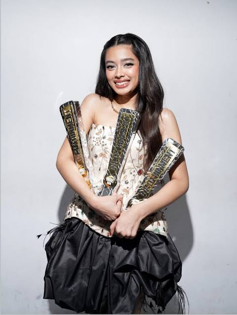

02 - KARIER
Perjalanan Karier Aqeela Calista
Perjalanan dan perkembangan Aqeela Calista dalam dunia hiburan.

Awal Karier dan Artis Cilik
Lahir pada 14 Juni 2008 di Jakarta, Aqeela Calista terjun ke dunia akting sejak usia sangat muda, sekitar 2 hingga 3 tahun. Debut akting pertamanya melalui sinetron populer Putri yang Ditukar pada tahun 2010-2011, berperan sebagai Aini kecil. Konsisten membintangi berbagai judul sinetron setiap tahunnya untuk mengasah kemampuan akting, seperti Anugerah (2012), Putri Bidadari (2012), hingga Indah Kasih Bunda (2017).Namanya semakin melambung tinggi saat memerankan karakter Ria dalam sinetron Dari Jendela SMP yang tayang pada tahun 2020 hingga 2022.Berkat aktingnya yang memukau sebagai troublemaker, ia meraih penghargaan Aktris Pendamping Paling Ngetop di SCTV Awards tahun 2020 dan 2021.Kembali menjadi sorotan publik lewat peran utamanya dalam serial Asmara Gen Z di SCTV.